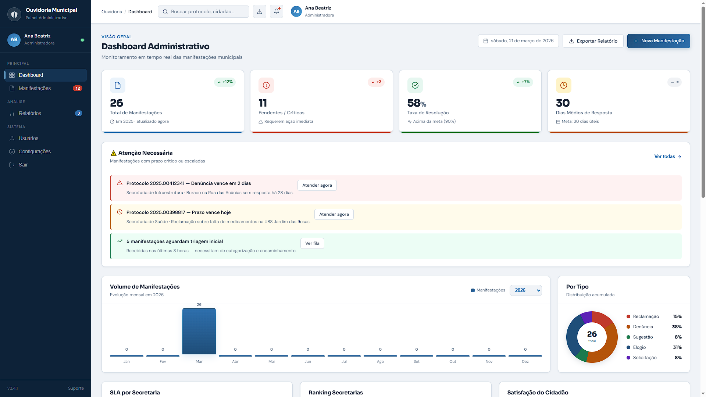
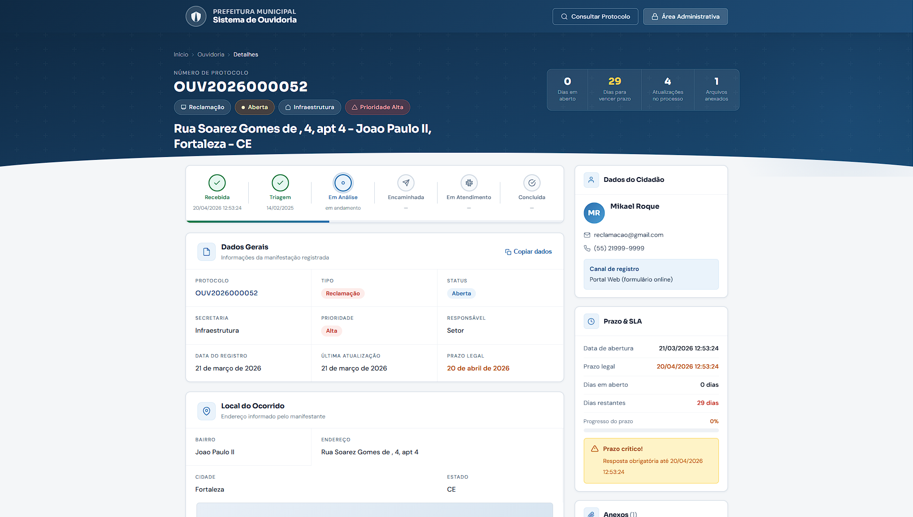
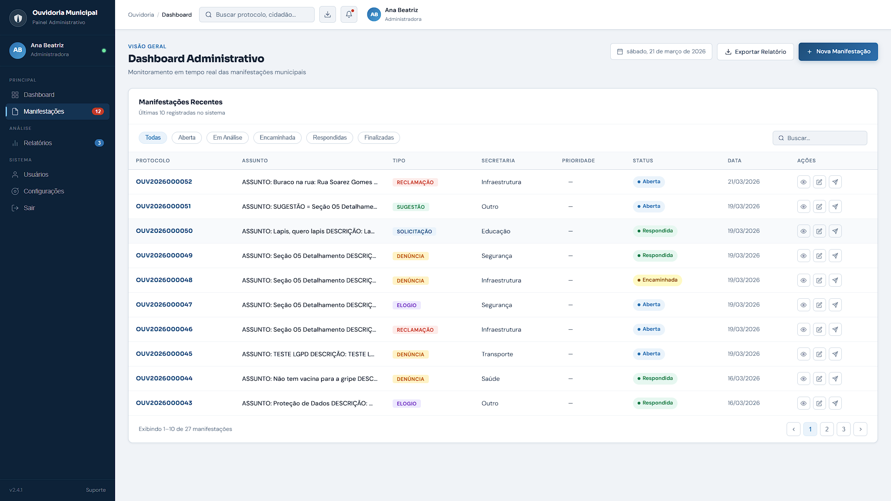

Prefeituras precisam de um canal formal e organizado para receber manifestações dos cidadãos. Foi com esse objetivo que a Roque Systems desenvolveu o Sistema de Ouvidoria Municipal — uma plataforma web que digitaliza e estrutura todo o fluxo de atendimento de reclamações, sugestões, elogios e denúncias.
O que é o sistema
O Sistema de Ouvidoria Municipal é uma aplicação web desenvolvida sob medida para prefeituras. Ele permite que os cidadãos registrem manifestações de forma simples pelo portal, e que os servidores públicos gerenciem, acompanhem e respondam a cada uma delas através de um painel administrativo centralizado.
Cada manifestação recebe um número de protocolo único, permitindo que o cidadão acompanhe o andamento do seu caso a qualquer momento. Do lado da prefeitura, os gestores têm visibilidade completa sobre todas as solicitações em aberto, em andamento e concluídas.
O sistema categoriza as manifestações em quatro tipos: reclamação, sugestão, elogio e denúncia — cada uma com seu fluxo e prazo de resposta definidos conforme a legislação de ouvidoria pública.
Funcionalidades
O sistema foi pensado para atender tanto o cidadão quanto o servidor municipal, com interfaces distintas e adequadas para cada perfil.

Experiência do Cidadão
O portal público é acessível por qualquer navegador, sem necessidade de cadastro prévio. O cidadão preenche um formulário com seus dados de contato, escolhe o tipo de manifestação, descreve o ocorrido e envia. Em instantes recebe o número de protocolo para acompanhamento.
A consulta de protocolo funciona de forma igualmente simples: basta informar o número recebido para ver em qual etapa a manifestação se encontra e qual foi a resposta da prefeitura, quando disponível.

Painel de Gestão
O painel administrativo é a ferramenta dos servidores municipais. Nele é possível visualizar todas as manifestações recebidas, filtrar por status, tipo ou data, registrar respostas e encerrar atendimentos. O histórico completo de cada caso fica registrado no sistema.
O controle de prazos também está presente: o sistema sinaliza manifestações próximas do vencimento do prazo legal de resposta, ajudando a equipe a priorizar o atendimento e evitar descumprimento da legislação de ouvidoria.
O sistema conta com controle de acesso por perfil de usuário. Servidores visualizam apenas as manifestações do seu setor; gestores e administradores têm acesso amplo e podem gerar relatórios consolidados.

O sistema pode ser adaptado para municípios de qualquer porte. Entre em contato e apresentamos uma proposta personalizada para a realidade da sua prefeitura.